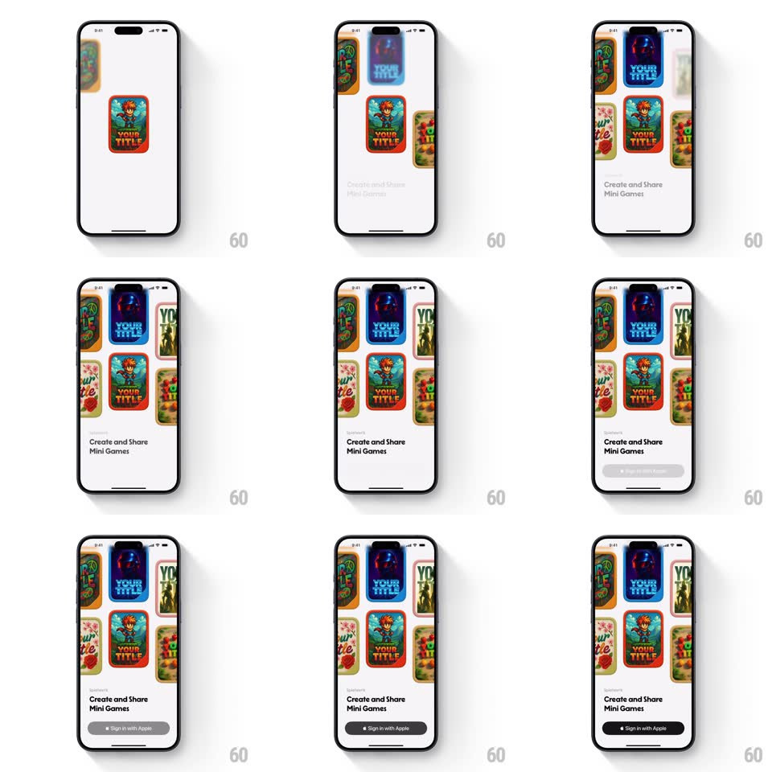

Media
Frame-by-frame

Rebuild this animation 1:1: Spielwerk's splash-to-grid - a single hero game card scales down into a two-column wall of game covers while the tagline and a sign-in bottom sheet slide up.

Rebuild this animation 1:1: Spielwerk's splash-to-grid - a single hero game card scales down into a two-column wall of game covers while the tagline and a sign-in bottom sheet slide up. ## Integration Integration: stack-agnostic spec - springs given as stiffness/damping, timed motions as duration + curve; map every value to your framework and animation library of choice. ## Scene White onboarding screen: a hero game cover card (orange, "YOUR TITLE") centered, becoming a grid of colorful mini-game covers in two scrolling columns, the copy "Create and Share Mini Games", and a bottom sheet with a black "Sign in with Apple" pill. ## Motion spec Pattern: hero-to-grid scale transition, ~1.4s. - Hero: the single card scales up from 0.6 (spring ~320/20, 400ms) and holds centered. - Explode: it scales down to grid-cell size while the surrounding cards scale in around it (stagger 30ms per card outward from the hero, spring ~340/22, 300ms each); the two columns land offset by half a card. - Drift: the columns start a slow opposing auto-scroll (one up, one down, ~20px/s). - Copy and sheet: "Create and Share Mini Games" fades up (250ms) as the bottom sheet slides up (spring ~300/26, 400ms) with the sign-in pill. ## Calibration - The hero card is one of the grid cards - it never leaves, it shrinks into place. - The sheet overlays the grid; the columns keep drifting behind it. ## Reduced motion Grid, copy, and sheet fade in assembled (300ms). ## Don't miss - The stagger radiates from the hero card's final cell. - The two columns drift in opposite directions.